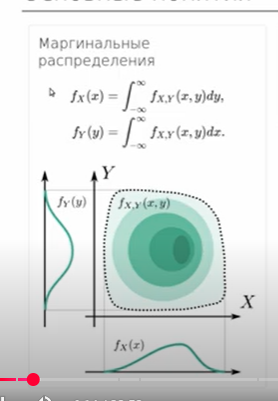
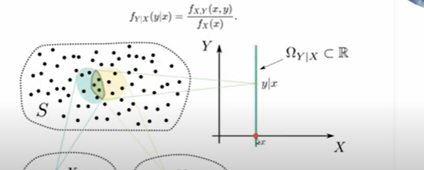
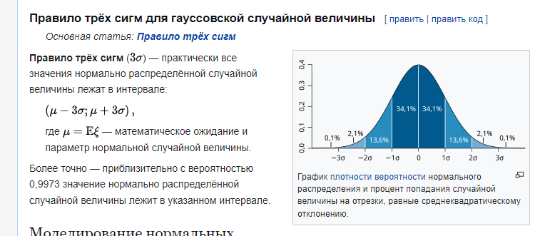

Практика 9. Многомерные, ЗБЧ и ЦПТ¶
Цель. Совместное распределение двух СВ, маргинальные и условные, ЗБЧ с ЦПТ и оценки вероятности неравенствами.
Ход пары
- Многомерная функция распределения
- Маргинальные распределения
- Условные распределения
- Совместные распределения
- ЗБЧ и ЦПТ
- Вероятностные неравенства и правило трёх сигм
Многомерная функция распределения¶
Теория¶
На доску
Двумерной называют случайную величину \((X, Y)\), возможные значения которой есть пары чисел \((x, y)\). Составляющие \(X\) и \(Y\), рассматриваемые одновременно, образуют систему двух случайных величин.
Двумерную величину геометрически можно истолковать как случайную точку \(M(X; Y)\) на плоскости \(xOy\) либо как случайный вектор \(\overrightarrow{OM}\).
На доску
Функцией распределения вероятностей двумерной случайной величины называют функцию \(F(x, y)\), определяющую для каждой пары чисел \((x, y)\) вероятность того, что \(X\) примет значение, меньшее \(x\), и при этом \(Y\) примет значение, меньшее \(y\):
Геометрически это равенство можно истолковать так: \(F(x, y)\) есть вероятность того, что случайная точка \((X, Y)\) попадет в бесконечный квадрант с вершиной \((x, y)\), расположенный левее и ниже этой вершины.
Функция распределения обладает следующими свойствами.
На доску
Свойство 1. Значения функции распределения удовлетворяют двойному неравенству
На доску
Свойство 2. Функция распределения есть неубывающая функция по каждому аргументу:
На доску
Свойство 3. Имеют место предельные соотношения:
- \(F(-\infty, y) = 0\),
- \(F(x, -\infty) = 0\),
- \(F(-\infty, -\infty) = 0\),
- \(F(\infty, \infty) = 1\).
На доску
Свойство 4. а) При \(y = \infty\) функция распределения системы становится функцией распределения составляющей \(X\):
б) При \(x = \infty\) функция распределения системы становится функцией распределения составляющей \(Y\):
На доску
Плотностью совместного распределения вероятностей (двумерной плотностью вероятности) непрерывной двумерной случайной величины называют вторую смешанную производную от функции распределения:
На доску
Зная плотность распределения, можно найти функцию распределения по формуле
На доску
Вероятность попадания случайной точки \((X, Y)\) в область \(D\) определяется равенством
Двумерная плотность вероятности обладает следующими свойствами.
На доску
Свойство 1. Двумерная плотность вероятности неотрицательна:
На доску
Свойство 2. Двойной несобственный интеграл с бесконечными пределами от двумерной плотности вероятности равен единице:
В частности, если все возможные значения \((X, Y)\) принадлежат конечной области \(D\), то
Задача 412. Двумерная плотность¶
Задана функция распределения двумерной случайной величины
Найти двумерную плотность вероятности системы.
Решение¶
Открыть
Используем формулу \(f(x, y) = \dfrac{\partial^2 F}{\partial x\, \partial y}\). Найдем частные производные:
Итак, искомая двумерная плотность вероятности
Рекомендуем читателю для контроля убедиться, что
Задача 416. Плотность в круге¶
В круге \(x^2 + y^2 \leqslant R^2\) двумерная плотность вероятности \(f(x, y) = C\bigl(R - \sqrt{x^2 + y^2}\bigr)\); вне круга \(f(x, y) = 0\). Найти:
а) постоянную \(C\);
б) вероятность попадания случайной точки \((X, Y)\) в круг радиуса \(r = 1\) с центром в начале координат, если \(R = 2\).
Решение¶
Открыть
а) Используем второе свойство двумерной плотности вероятности:
Отсюда
Перейдя к полярным координатам, получим
б) По условию, \(R = 2\); следовательно, \(C = 3/(8\pi)\) и
Вероятность попадания случайной точки \((X, Y)\) в круг радиуса \(r = 1\) с центром в начале координат (область \(D_1\))
Перейдя к полярным координатам, окончательно получим искомую вероятность:
Маргинальные распределения¶
Теория¶
На доску

Задача 408. Законы составляющих¶
Задано распределение вероятностей дискретной двумерной случайной величины:
| \(Y \backslash X\) | 3 | 10 | 12 |
|---|---|---|---|
| 4 | 0,17 | 0,13 | 0,25 |
| 5 | 0,10 | 0,30 | 0,05 |
Найти законы распределения составляющих \(X\) и \(Y\).
Решение¶
Открыть
Сложив вероятности «по столбцам», получим вероятности возможных значений \(X\): \(p(3) = 0{,}27\), \(p(10) = 0{,}43\), \(p(12) = 0{,}30\).
Напишем закон распределения составляющей \(X\):
| \(X\) | 3 | 10 | 12 |
|---|---|---|---|
| \(p\) | 0,27 | 0,43 | 0,30 |
Контроль: \(0{,}27 + 0{,}43 + 0{,}30 = 1\).
Сложив вероятности «по строкам», аналогично найдем распределение \(Y\).
Задача 423. Плотности составляющих¶
Задана плотность совместного распределения непрерывной двумерной случайной величины \((X, Y)\)
Найти: а) плотности распределения составляющих; б) условные плотности распределения составляющих.
Решение¶
Открыть
а) Найдем плотность распределения составляющей \(X\):
Вынесем за знак интеграла множитель \(e^{-x^2/2}\), не зависящий от переменной интегрирования \(y\), и дополним оставшийся показатель степени до полного квадрата; тогда
Учитывая, что интеграл Пуассона \(\displaystyle\int_{-\infty}^{\infty} e^{-u^2}\, du = \sqrt{\pi}\), окончательно получим плотность распределения составляющей \(X\):
Аналогично найдем плотность распределения составляющей \(Y\):
В задачнике в этой промежуточной строке при \(x\) стояло \(\sqrt{2/5}\). Верно \(\sqrt{1/10}\): иначе перекрёстный член равен \(2xy\), а не \(xy\). Множитель \(e^{x^2/10}\) и ответы \(f_1\), \(f_2\) от этого не меняются. Условные плотности — в следующей теме.
Условные распределения¶
Теория¶
На доску
Условное распределение
На доску
Независимые случайные величины

Добьём предыдущие 2 примера. Пункт б задачи 423.
Решение¶
Открыть
Найдем условные плотности распределения составляющих. Выполнив элементарные выкладки, получим:
С дискретными тоже должно быть просто.
На доску
Теорема. Для того чтобы случайные величины \(X\) и \(Y\) были независимыми, необходимо и достаточно, чтобы интегральная функция системы \((X, Y)\) была равна произведению интегральных функций составляющих:
На доску
Следствие. Для того чтобы непрерывные случайные величины \(X\) и \(Y\) были независимыми, необходимо и достаточно, чтобы дифференциальная функция системы \((X, Y)\) была равна произведению дифференциальных функций составляющих:
Задача 10.16. Зависимы ли \(\xi\) и \(\eta\)¶
Совместное распределение случайных величин \(\xi\) и \(\eta\) имеет плотность
а) Найти постоянную \(c\).
б) Установить, зависимы или нет случайные величины \(\xi\) и \(\eta\).
в) Найти плотность распределения \(\xi\).
г) Найти плотность распределения \(\eta\).
д) Найти вероятность \(\mathbf{P}\bigl\{|\xi| \leqslant 1,\ |\eta| \leqslant 1\bigr\}\).
Решение¶
Открыть
Знаменатель раскладывается: \(1 + x^2 + x^2 y^2 + y^2 = (1+x^2)(1+y^2)\), поэтому
а) Нормировка:
отсюда \(c = 1/\pi^2\).
б) \(p(x, y) = \dfrac{1}{\pi(1+x^2)} \cdot \dfrac{1}{\pi(1+y^2)}\) — произведение плотностей составляющих, \(\xi\) и \(\eta\) независимы.
в), г) Это плотности Коши:
д)
Совместные распределения¶
Теория¶
На доску
Составное распределение / compound (mixture) distribution.
Случайная величина \(X\) задается составным распределением, если её распределение зависит от величины, которая так же имеет распределение.
Практический пример: Венчурный фонд¶
За год фонд инвестирует в случайное число стартапов \(Y \sim \mathrm{Poisson}(\lambda)\). Каждый стартап независимо оказывается удачным с вероятностью \(p\). Если проектов ровно \(Y\), число удачных \(X\) — число успехов в \(Y\) испытаниях Бернулли, то есть \(X \mid Y \sim \mathrm{binomial}(Y, p)\).
У биномиального матожидание равно числу испытаний, умноженному на \(p\), поэтому \(\mathbb{E}[X \mid Y] = pY\). Снимаем условие по \(Y\):
Хотелось бы посчитать это матожидание уже здесь, но сделаем это на следующей паре: пока матожидания многомерных ещё не проходили.
ЗБЧ и ЦПТ¶
Теория¶
На доску
Теорема: слабый закон больших чисел / weak law of large numbers.
Пусть \(X_1, \ldots, X_n\) являются i.i.d. случайными величинами с \(\mathbb{E} X_i = \mu\) и \(\mathrm{Var}\, X_i = \sigma^2 < \infty\). Пусть \(\bar X_n\) является соответствующим выборочным средним. Тогда для любого \(\varepsilon > 0\)
В таком случае мы говорим, что \(\bar X_n\) сходится к \(\mu\) по вероятности.
Практический пример: Люди и вампиры¶
Генеральная совокупность — вероятность 1 к 99 людей и вампиров; выборка — подходим к случайным людям на улице и спрашиваем. ЗБЧ говорит, что среднее выборочное стремится к матожиданию.
На доску
Пусть \(X_1, \ldots, X_n\) есть последовательность независимых одинаково распределённых случайных величин, имеющих конечные математическое ожидание \(\mu\) и дисперсию \(\sigma^2\). Пусть также
Тогда
по распределению при \(n \to \infty\), где \(N(0,1)\) — нормальное распределение с нулевым математическим ожиданием и стандартным отклонением, равным единице. Определяя выборочное среднее первых \(n\) величин как
можно переписать результат центральной предельной теоремы в следующем виде (ЦПТ в форме Леви):
по распределению при \(n \to \infty\).
Скорость сходимости можно оценить с помощью неравенства Берри—Эссеена.
Задача. Применимость ЗБЧ¶
Дана последовательность независимых случайных величин \(X_1, X_2, \ldots, X_n, \ldots\) Случайная величина \(X_n\) может принимать значения: \(-n\alpha, 0, n\alpha\) (\(\alpha > 0\), \(\alpha = \mathrm{const}\)) с вероятностями, соответственно равными: \(\dfrac{1}{2n^2};\; 1 - \dfrac{1}{n^2};\; \dfrac{1}{2n^2}\).
Применим ли к этой последовательности закон больших чисел?
Решение¶
Открыть
Для того чтобы к последовательности случайных величин была применима теорема Чебышева, достаточно, чтобы эти величины были попарно независимы, имели конечные математические ожидания и равномерно ограниченные дисперсии.
Поскольку случайные величины независимы, они попарно независимы, то есть первое требование выполняется.
Проверим, выполняется ли требование конечности математического ожидания:
Да, математические ожидания ограничены.
Исследуем дисперсии:
Дисперсии ограничены сверху \(D(X_n) \leqslant \alpha^2\).
Так как все требования выполнены, закон больших чисел применим.
Вероятностные неравенства и правило трёх сигм¶
Теория¶
С точки зрения практических задач эти неравенства нужны, чтобы упрощать вычисления.
Часто мы уже можем честно посчитать сложную модель. Иногда задача вовсе не просит такого подхода — и силы тратятся зря.
На доску
Если случайная величина, принимающая неотрицательные значения, то для любых \(a > 0\) выполняется
В записи (когда нужно оценить вероятность того, что \(X < a\))
На доску
Если известно математическое ожидание (первый момент), но и дисперсия случайной величины (и они конечны), можно использовать неравенство Чебышева, которое дает оценку вида:
В другой форме:
Задача 1. Вызовы на коммутатор¶
Среднее количество вызовов, поступающих на коммутатор завода в течение часа, равно 300. Оценить вероятность того, что в течение следующего часа число вызовов на коммутатор: а) превысит 400; б) будет не более 500.
Решение¶
Открыть
Неравенство Маркова.
Задача 4. Отклонение числа успехов¶
В 1600 испытаниях Бернулли вероятность успеха в каждом испытании равна \(0{,}3\). С помощью неравенства Чебышева оценить вероятность того, что разница между числом успехов в этих испытаниях и средним числом успехов будет меньше 50.
Решение¶
Открыть
Неравенство Чебышева для биномиального распределения.
Правило трёх сигм¶
На доску
Правило трёх сигм \((3\sigma)\) — практически все значения нормально распределённой случайной величины лежат в интервале
где \(\mu = \mathbb{E}\xi\) — математическое ожидание и параметр нормальной случайной величины.
Более точно — приблизительно с вероятностью \(0{,}9973\) значение нормально распределённой случайной величины лежит в указанном интервале.

Самостоятельная¶
3 минуты. Генератор обеспечивает выходное напряжение, которое может отклоняться от номинального на значение, не превышающее 1 В, с вероятностью \(0{,}95\). Какие значения дисперсии выходного напряжения можно ожидать?
Решение¶
Открыть
Пусть \(X\) — величина выходного напряжения. Применим неравенство Чебышева \(P\bigl(|X - MX| < \varepsilon\bigr) \geqslant 1 - DX/\varepsilon^2\). Подставляя наши данные \(\varepsilon = 1\), \(P = 0{,}95\), имеем:
Ответ: дисперсия не менее \(0{,}05\) В\(^2\).
6 минут. 425. Плотность совместного распределения непрерывной двумерной случайной величины \(f(x, y) = \cos x \cdot \cos y\) в квадрате \(0 \leqslant x \leqslant \pi/2\), \(0 \leqslant y \leqslant \pi/2\); вне квадрата \(f(x, y) = 0\). Доказать, что составляющие \(X\) и \(Y\) независимы.
Решение¶
Открыть
Указание. Убедиться, что безусловные плотности распределения составляющих равны соответствующим условным плотностям.
Домашнее задание
HW9_y2023.pdf